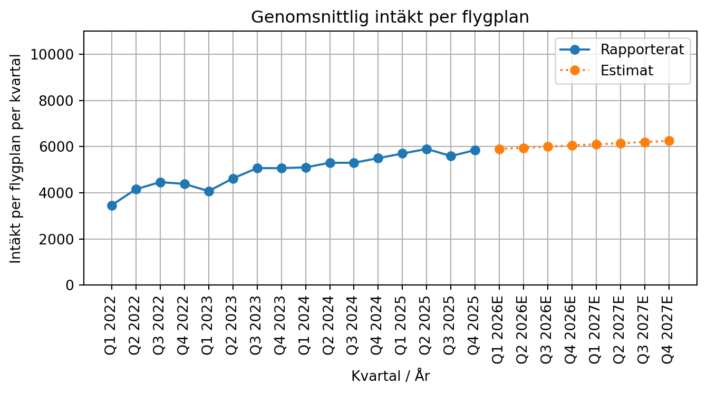
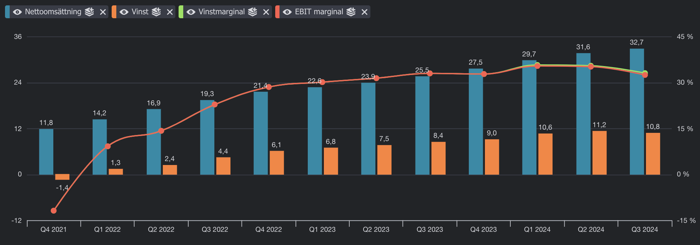
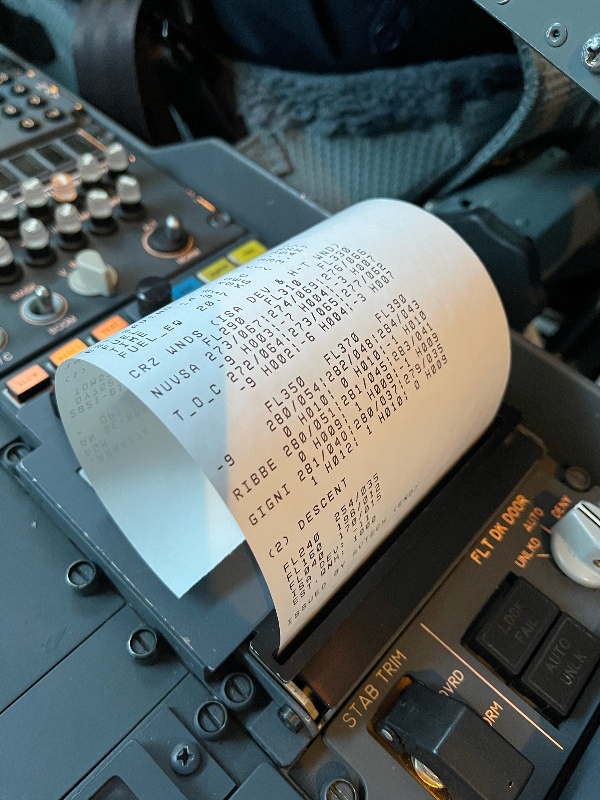
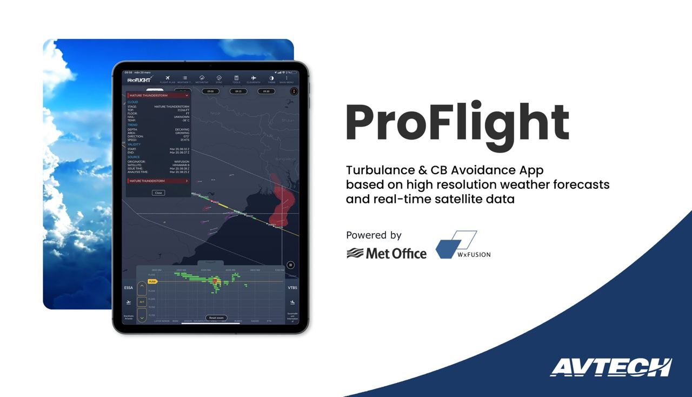
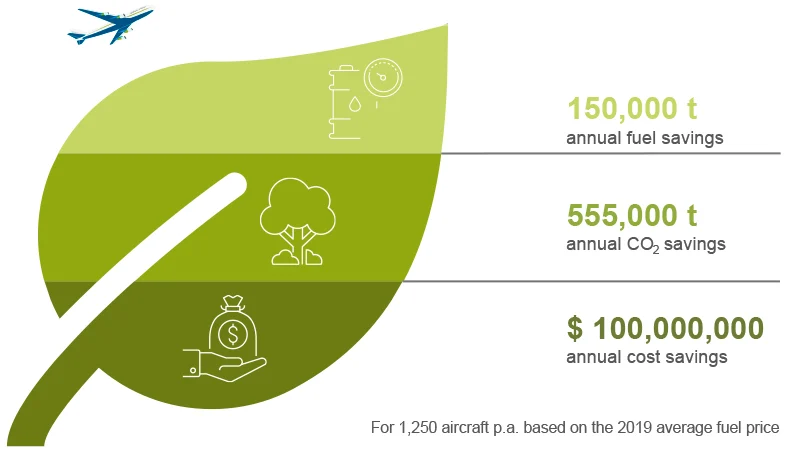
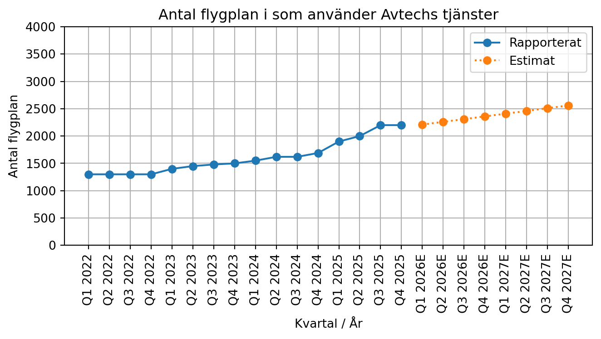
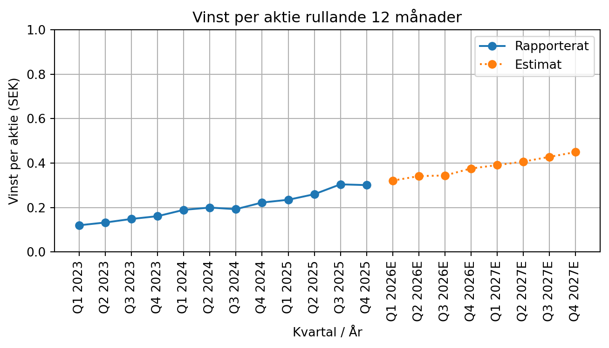

Aktiecase Avtech, uppdaterat 2025
aktieanalys
bolagsanalys
aktiecase
avtech
flygplan
Packa väskorna för här kommer årets största analys av Avtech
sda – –
NoteDisclaimer
Tänk på att investeringar alltid innebär ett risktagande. Gör alltid din egen analys innan eventuell handel.
WarningEget ägande - 2026-01-09
Jag inga aktier i Avtech
NoteUppdatering 2025-12-16 flygplan
fint SaaS-bolag
enkelt att förstå
fortfarande en ganska optimistisk värdering
det brukar komma in kontrakt runt jul (LATAM, SAS, Volotea)
starkt trots att man har valuta i stadig motvind
kontraktet löper ut snart för volotea och volaris
Clearpath ÄR en suboptimal produkt, sämre än konkurrenternas –> genomsnittlig intäkt per flygplan lär vara kvar på runt 24 tkr och inte växa mot 30-40 som jag hoppades på
Starka konkurrenter och upplevd medelmåttig styrning av avtech bäddar lite för att det inte ska bli så bra.
Fortsätt långa säljcykler och få nya kontrakt under 2025, enbart Wizz air som köpt Sigma / Aventus
Risker som finns geneom att expandera till nytt verksamhetsområde istället för att bara göra allt man kan för att slå Storkjet — Storkjet som landar nya kontrakt löpande
Även om man landar nya flygplan under 2026 för 200 flygplan och har ingen churn så kommer det blir väldigt tuffa comps från q3 2026 och framåt. Det är avgörande att öka antalet flygplan och genomsnittig intäkt per flygplan.
Snart är effekten av att skattereduktion slut
Styrningen är inte jättebra - kommunikationen inte särskilt nyanserad, investor updates kommer inte längre och det är svårt att fatta marknadsdynamiken utan att få hjälp av management. Exempelvis begriper jag inte varför bolag som LATAM har köpt så många optimeringstjänster? Innebär det att någon ska ut?
Hemsidan är riktigt kass, ordentlig 2010 wordpress känsla på den.
NoteUppdateringar
Fler uppdateringar på caset finns att tillgå längst ner
Bakgrund

Avtech är ett mjukvarubolag som huvudsakligen levererar B2B tjänster till flygoperatörer som Southwest Airlines, LATAM Airlines och Norwegian. Bolaget grundades i slutet på 80-talet med en konsultverksamhet som bas, men sedan 10-talet har Avtech huvudsakligen tjänat sina pengar på sin produkt Aventus. Sedan 2011 har bolag varit på börsen och knöt snabbt ett stort kontrakt med Southwest som sedan dess har varit Avtechs största kund. Bolaget var i en olönsam och svår sits under lång tid på 10-talet fram till 2019 då bolaget vände till vinst, men precis i samma veva kom pandemin mars 2020 och drog ner bolaget till förlust igen. Förlusterna innebar att Avtech har idag ett skattemässigt underskottsavdrag på ca 50 miljoner sek, i praktiken innebär det att all vinst före skatt översätts till vinst för de kommande 50 miljonerna som företaget tjänar. Avtech har enbart haft en kund som någonsin churnat, det är Lufthansa cargo, detta var under pandemin när Lufthansa genomförde en intern omstrukturering.
Verksamheten består av fyra produkter, där samtliga handlar om att på olika sätt leverera optimeringstjänster till flygbolagens flygplan genom att bland annat använda sig av väderdata. Optimeringen avser att minska på flygplanens bränsleförbrukning, som är flygbolagens största OpEx kostnad, alternativt avser tjänsterna att öka komforten för passagerarna genom att flyga på en säkrare rutt genom att informera om dåligt väder och vind under flygning.
Produkter
Samtliga av Avtechs tjänster är skalbara och kräver liten input från Avtechs sida för att onboarda en ny kund. Det krävs ingen teknisk utrustning utöver det som finns out of the box i ett flygplan, då tjänsterna levereras likt ett API direkt in i flygplanets dator.
Aventus, den största produkten, är en vindoptimeringstjänst som nyttjas för att bespara bränsle under den nedgångsfasen under en flygning. Enligt beräkningar besparar tjänsten ca 8% av det bränsle som annars hade förbrukats.
Clearpath, Avtechs senaste produkt, släppt 2019 tillsammans med Norwegian. Produkten optimerar flygningar och skapar klarhet i var turbulens kan uppstå för piloter som kan välja att följa Avtechs råd.

Informationen levereras till flygplanet genom de skrivare som de flesta flygplan har stöd för idag. Varje enskilt flygplan får en egenanpassad modell för sig. Clearpath besparar ca 2,5% av bränslekostnaderna.
Mustiga Mari levde en dag som en pilot där det går att se hur ClearPath jobbar i verkligheten, klicka fram till 16:40.
Från att ha pratat med en pilot som använder sig av Clearpath är responsen bra, det är inte alltid som det går att följa de rekommendationerna som Clearpath rekommenderar eftersom det skulle innebära att en pilot behöver stiga och sjunka många gånger under en kortare tid, vilket skapar förvirring för flygledningen som inte själva sitter på samma information. Vikten på flygplanet är också viktigt, om ett flygplan väger lite mer än vad Clearpath räknat med så försvinner vinsterna som beskrivs av Clearpath.
Sigma, en produkt för att varna för turbulens. Jag antar att Sigma är ganska insignifikant för Avtechs omsättning.
ProFlight, en iPad-app som innehåller liknande information som Clearpath, används främst för att visa upp funktionaliteten som finns i ClearPath, det är inte känd hur många användare som använder sig av ProFlight, men gissningsvis en insignifikant mängd.

Marknaden
Marknaden består av en drös olika tjänster, kunder och segment. Segmenten som Avtech är aktiv på är optimeringstjänster för flygbolag och turbulens. Närliggande är analystjänster som avser att datadrivet ge en överblick på verksamheten genom att bevaka operativa nyckeltal. Tjänsterna kommer vanligvis i form av iPad appar eller som en tjänst direkt till flygdatorn. Kunder segment består av bland annat piloter, kabinpersonal, markpersonal och management. I dagsläget är huvudfokuset för samtliga av Avtechs produkter riktade mot piloter.
Marknaden präglas av Safety first. Säkerhet kommer alltid först, vilket innebär att flygplans operatörer helst inte vill ändra något i sina processer när det redan fungerar. Det gör livet svårare för företag som Avtech, försäljningscyklerna är väldigt långa (~1 år), samtidigt som det skapar en hög vallgrav för de som redan har etablerat sig och tagit sig över muren.
Konkurrens
Konkurrensen är snårig och inte helt enkel att begripa. Eftersom marknaden är relativt ny och det inte är helt lätt att förstå vilka som finns utan att vara med i branschen själv.
OpenAirlines, ett franskt bolag baserat i flygstaden Toulouse ett primärt en analytics tjänst för piloter, markpersonal, underhåll, analysteam och management. Genom benchmarks kan tjänsten informera hur din senaste flygning var, likt något du kan få av en träningsklocka efter senaste löppasset. Den coachar dig hur du kan flyga bättre, men är inte en optimeringstjänst som Clearpath.
Skypath IO erbjuder en turbulenstjänst som direkt konkurrerar med Clearpaths turbulens modul. Southwest har uttalat sig för att favorisera Skypaths lösning och har uttalat sig att de inte kommer att använda papper i cockpit, vilket tydligt indikerar att det inte finns något intresse för att anamma Clearpath. Skypath levererar sin tjänst som en iPad app, som gissningsvis är bättre än Avtechs tjänst ProFlight.
En uttalad konkurrent till Avtech är PaceLab som erbjuder en flygoptimeringstjänst som liknar Avtechs Clearpath. Avtech utlovar högre besparingar med upp till 2,5 procent jämfört med Pacelabs genomsnittliga besparing på 1 procent.
Hur bra är Pacelab? Beräknat med 1250 flygplan, sparar man 150,000 ton co2 per år. Avtechs Aventus besparar 84 000 ton på ca 780 flygplan per år för Southwest Airlines, det blir 135 000 ton co2 per år med 1250 flygplan. Avtechs Clearpath med SAS Airlines är ca 100 flygplan och 6000 ton co2 per år, det blir 75 000 ton per år med 1250 flygplan. Givet det är rättvist att lägga samman tjänsterna, så är 135 000 ton + 75 000 ton totalt 210 000 ton vilket är signifikant mycket mer än vad Pacelab har att erbjuda.

Avtechs tjänst verkar bättre än Pacelab. Openairlines gör analyics och Skypath har ingen optimeringstjänst för att flyga optimalt, den bara varnar för turbulens.
Aktien & ledningen
Avtech styrs av före detta vd Christer Fehrling tillsammans med Johnny Olsson som tidigare var styrelseledamot. Totalt sitter de på 35 procent av rösterna, utöver det är det ett ganska spretigt ägande med många som äger ett par procent här och var, vilket är att vänta sig i ett bolag som varit på börsen i 14 år med över hälften av tiden dragits med olönsamhet. Största ägare är ansiktslösa Avanza pension med 15 procent av kapitalet.
Ledningen: David Rytter är vd sedan 2020, innan det var han CTO på Avtech och har varit engagerad i produkten Aventus. David är född 1983 och har en masters från KTH inom Aerospace Engineering. David äger 85 000 aktier i Avtech. Christina Zetterlund är CFO sedan 2020 och äger 32 000 aktier.
Värdeskapande
Flygoperatörerna behöver använda sig av tjänsterna runt 6% av alla flighter för att nå break even med Avtechs Clearpath. Volaris lyckats nyttja Clearpath åtminstone 40 procent av alla flighter, med ett tak runt 70 procent då flygledningen på flygplatserna också behöver godkänna att rutten för flygplanet ska ändras. Under årsstämman 2024 kommunicerades det att Avtech total skapar 39 miljoner dollar i värde för sina kunder, vilket är 15x mer omsättningen vid informationstillfället. Låt oss dyka djupare ner i det.
Unit economics: Baserat på den studie som Avtech skapat tillsammans med Norwegian sparas det 15k-10k ton CO2, där 1 ton jetbränsle kan översättas till ca 3,16 ton CO2. Ett ton jetbränsle kostar ca 7026 SEK. Vi räknar med att Avtech och Norwegian är optimistiska i sina kalkyler och tar 10k CO2 i sina besparingar, det blir 3165 ton jetbränsle.
\[ Besparingar=Sparat\ Bränsle*Pris\ Per\ Ton=3165*7026=22\ MKR \]
Besparingen blir då 22 miljoner kronor för Norwegian som har en flotta på 70 flygplan runt år 2020. Norwegians kontrakt är inte känt, men vi kan gissa att det är ca 26 tkr per flygplan och år, då bidrar Norwegian med 1,82 miljoner per år till omsättningen för Avtech.
\[ ROI = \frac{22\ MKR}{1.82\ MKR}= 12x \]
ROI är 12x för Norwegian genom att använda Avtechs tjänster. Beräkningen för unit economics genomfördes under tidigt 2023 och har troligen blivit ännu mer fördelaktig för Norweight i samband med att piloterna blir bättre på att använda Avtechs tjänster.
Risker
Leverantörsrisk: Om något av någon anledning händer mellan MetOffice / WxFusion som är Avtechs huvudsakliga leverantörer av väderdata så finns det risker att störa driften. Cybersäkerhet är viktigt för både leverantör och Avtech.
Nyckelpersonerna är bland annat David Rytter (VD) och Christina (CFO) som tillsammans är ledningen i Avtech. Det vore en förlust och skapar osäkerhet om någon av dessa väljer att kliva av sina respektive roller. I dagsläget har Avtech inget incitamentsprogram och ledningen äger mindre än 0,2% av kapitalet.
Stor kundsberoende som tidigare har varit Southwest Airlines med mer än 50 procent av omsättningen, men har gradvis minskat till 32 procent i början av januari 2025. Det blir bättre med tiden i samband med att Avtech onboardar fler kunder.
Teknisk risk är ett problem då andra företag kan snabbt ta fram en konkurrenskraftig lösning i ett modernt gränssnitt. Det som talar emot denna risk är att marknaden är så pass säkerhetsorienterad och det tar tid att bygga förtroende för nya produkter som förändrar processer.
Geopolitik kan vända upp och ner i värdeskapandet om något oväntat händer. Finns också möjligheter med geopolitiska situationen där det kan exempelvis driva upp oljepriset vilket ökar värdeskapande ännu mer när jetbränslet ökar i pris.
Valuta risk kan skapa en artificiell motvind för Avtech då exponering mot EUR och USD sker ohedgat. De senaste 10 åren har varit fantastiska att inte ha någon hedge mot valutarisker, det kommer inte vara lika trevligt om SEK blir starkare.
Talang risk, att vara baserad i Kista kan göra det svårare att attrahera och behålla talang jämfört med att vara baserat i innerstaden. Kista har visserligen lägre hyror, men allt har sitt pris.
Likviditetsrisk är ett hinder för att större investerare ska ha möjlighet att köpa Avtech på börsen, likviditeten är usel med runt 100k aktier omsatta per dag under december 2024.
Pandeminer är inte bra för Avtech.
Utveckling
Utvecklingen framåt i estimaten påverkas mycket av att LATAM kontraktet kickar in gradvis, räknar med att hastigheten på onboarding är densamma som för SAS airlines. Jag har inte räknat med fler kontrakt än de som är kända och utgår ifrån att de som är kunder idag kommer att rulla vidare sina kontrakt.
Avtechs soliditet, likviditet, finansiella positionering är urstark. Det finns möjligheter för Avtech att optimiera sin kapitalstruktur och minska sina kostnader, men jag har inte räknat med något sådant scenario här. Bolaget är sedan tidigare lite skärrat av skulder, så det kommer troligen vara överkapitaliserat under en lång tid framöver. Över häften av totala tillgångarna består av kassa.
Balansräkningen består av 14 mkr i anläggningstillgångar, 25 miljoner i kassan och runt 9 miljoner i kortfristiga fordringar. Balansräkningen är minst sagt överkapitaliserad och det drar ner nyckeltalen som ROE och ROTA (return on total assets). Kassan behövs inte för att bedriva den verksamhet som Avtech har, exkludrar vi kassan ökar ROE från 25 procent till 59 procent och ROTA ökar från 22 procent till 47 procent.
Överkapitaliserat
Räkna mer med en större utdelning framöver. Avtech har ingen uttalad agenda med sitt överskottskapital, men började under 2024 med utdelningar och delade ut 5,6 miljoner sek. Avtech har ingen möjlighet vad jag vet att köpa tillbaka aktier pga handelsplatsen First North. Avtech investerar redan i befintlig verksamhet sitt kapital och har anställt runt 4-5 personer under 2024. Det finns ingen förvärvsagenda och det är bäst så. Från balansräkningen ser det ut om att Avtech kan dela ut 15-20 miljoner utan att det skulle påverka verksamheten.
Genomsnittlig intäkt per flygplan
Kuriosa: Southwest betalade 4234 per flygplan mellan 2021 och 2023. Från Q3 2023 och framåt betalar de 4670, enbart för Aventus. LATAM Airlines kommer att betala 9084 per kvartal och flygplan från Q4 2024 och framåt, därför ökar snittintäkten signifikant kommande året.
Q3 2025: Genomsnittlig intäkt per flygplan minskar pga wizz air har lägre snittintäkt per flygplan.
Antal flygplan i som använder Avtechs tjänster
Antalet flygplan som tillkommer av LATAM airlines är 342 st, det innebär att det är troligt att spränga 2k gränsen innan 2025 är slut.

Q1 2025: LATAM airlines kommer in i böckerna och bryter en trend uppåt. Drar även med sig snittintäkten per flygplan. Q3 2025, Wizz Air group gör att trenden håller i sig.
Vinst per aktie rullande 12 månader
Vinst per aktie ser ut att bli betydligt bättre med LATAM airlines kontraktet som drar upp EPS från runt dagens 19 öre per aktie till helåret 2025 på 37 öre per aktie. För helåret 2025 räknar vi med att kontnaderna ökar med 3.8 miljoner jämfört med helåret 2024 och intäkterna ökar till 47.5 miljoner. Vinsten för helåret 2025 blir då 21 miljoner.

Vinsten per aktie är då 37 öre. Ett fair value för ett bolag som Avtech, som redan har bokat och betalat för flygresan till 2025E bedömer jag kan vara 25x vinsten, att jämföra med dagens 30x vinsten.
Värdering
Givet att 52 öre per aktie sker för helåret 2027 ser värderingen per aktie ut som följande. \[Värdering\ Per\ Aktie = Fair\ price \ earnings * EPS = 25*0.52=13 \ SEK\]
Givet dagens kurs på 8.94 är det en 45 procentig margin of safety.
Warning
Disclaimer: Jag äger aktier i Avtech. Gör din egen analys innan eventuell handel. Aktier innebär alltid ett risktagande och du kan förlora de pengar du väljer att investera. Jag har ingen relation till Avtech och allt ovan är min bedömning.
Framtiden
Avtech har uttalat sig att expandera sitt tjänsteerbjudande till mer än bara piloter. Min bedömning är att nästa stopp för Avtech är att erbjuda tjänsterna till flygbolagens kontorsarbetare (dispatchers), detta då värdet som skapas av tjänsterna blir synligare och prioriteringar av partnerskap blir enklare.
Utsläppsrätter (EU ETS) kommer sannolikt att påverka europeiska flygbolag på 2-3 årssikt när systemet för fria rätter fasas ut och då behöver alla flygbolag betala för sina utsläppsrätter vilket kommer göra flyg betydligt dyrare än vad det är idag. Antagligen slår det hårdast på konsumenter, men även flygbolag kan bli allt mer pressade och despirata för att få ner sina OpEx kostnader för jetbränsle/uppsläpptsrätter. Givet det sker ganska långsamt så hinner fler att se hur de kan minska sina utsläpp och det skapar en bra möjlighet för Avtech att expandera.
Fler kontrakt än väntat, om Avtech landar fler kontrakt än bara onboarda LATAM Airlines under 2025 så blir resultatet ännu bättre. Troligen kommer det att landa nya kontrakt under Q1 eller tidigt Q2, annars är det sent Q3 eller Q4 som gäller. Under sommaren är det generellt högsäsong för flygbolagen, då har de inte tid att utvärdera Avtechs tjänster.
ESG medvind givet att bolaget blir tillräckligt stort för att ta sig över miljardbarriären. När det är tillräckligt stort kan fonder köpa in sig och det lär snabbt blir en darling bland småbolagen.
Sammanfattning
- Genomsnittlig intäkt per flygplan flyger upp ✅
- Antalet flygplan som använder tjänsterna ökar kontinuerligt ✅
- Naturliga vallgravar pga säkerhetsorienterad bransch ✅
- Kunder som börjar använda Avtechs tjänster stannar kvar ✅
- Återkommande intäkter ✅
- Dålig likviditet i aktien 🚨
- Spredigt ägande, saknar stark huvudägare 🚨
- Ledningen äger insignifikanta andelar i bolaget, risk för tjänstemannastyrning 👀
- Operativt hävstång finns, fixed cost business ✅
- Rejäl margin of safety på totalt 33 procent, omvänt räknat en potential på 50 procent från dagens kurs ✅
- 50 miljoner i skattemässigt underskott ✅
- Produkter som skapar 10-15x ROI för slutkund, fina marginaler för Avtech och sparar på miljön för samhället. Win/Win/Win! ✅

Tip
Tack för att du har läst! Följ Aktiecase på X för fler Aktiecase.
Uppdateringar
TipKommentar Q3 2025 – 2025-10-25
“Vi har fortsatt tester och förberedelser med nya flygbolag och för dialog med bolag som avslutat sina tester. Vissa processer är tidskrävande, men vi förväntar oss nya affärer som utfall.” - vd ordet
Bäddar för att det kan komma nya kunder inom närmaste halvåret, även innan year-end.
David visar att det system som kopplar samman piloter med markpersonal är något som är klart i en första version, något som gör att markpersonalen har samma information som piloterna, därmed gör är det lättare att se till att alla förstår besluten som tas.
Framåt lär denna triangel knytas samman, där piloter, flygtrafikledning (ATC) och markpersonal har samma information och kan därmed ta bättre beslut. Det verkar vara en av de svåraste utmaningarna för Avtechs Clearpath för att få mycket nyttjande, att piloten hela tiden behöver flagga till ATC att man vill gå upp eller ner i höjd. Det besparar lite, men är ganska mycket jobb. Om alla kan ta beslut på samma information så är det lättare för piloter och ATC att samspela med varandra.
Kostnaderna för Avtech under Q3 2025 är lägre än vad jag trodde. Vad jag förstår det är det främst för att det är färre konsulter inne i Avtech nu än vad det var tidigare, så trots att c-suiten har växt något enormt med tre nya roller så har kostnaderna inte gått i taket.
Mellan raderna är det alltid värt att fundera på varför det finns en svaghet inom Clearpath. Southwest Airlines som är Avtechs största och viktigaste kund har vid många tillfällen haft möjlighet att köpa tjänsten, men inte gjort det. Nu när Wizz Air gjort en bedömning på tjänsterna landar de i att köpa Aventus och Sigma, men varför köper de inte Clearpath som är flaggskeppsprodukten? Är det så att Clearpath är sämre än StorkJets motsvarighet eller är den dyrare?
Det är konstigt att de väljer FPO (StorkJets svar på Clearpath), då den har en besparing på 0,5% till 1%. “after more than 10,000 test flights, Wizz Air achieved 0.5% to 1% fuel and CO2 reduction per flight with no compromise to safety.”, det är mindre än vad Clearpath gör.
Det är inte helt lätt att veta, men det synd att hela Avtechs produktflora verkar blomma. Kanske är detta något som kan adresseras när det blir mer av ett ekosystem av det när pilot/ATC/markpersonal kan se samma sak genom tjänsterna.
Samman taget är Q3 ett bra kvartal för Avtech. Omsättningstillväxten tuggar på, marginalerna är bättre än väntat när personalkostnaderna är lägre än väntat. Nya kunder fortsätter att köpa tjänsterna, det bäddar för bra tider framåt. För 10,8 SEK aktien ser det attraktivt ut.
TipUppdatering 2025-10-19
Superhauss att hela wizz air signar på, det netto ca 200 flygplan (Wizz Air UK var redan kund sedan tidigare) som flyger in i böckerna! Kundkoncentrationen minskar ytterligare, toppen!
https://mfn.se/a/avtech-sweden/wizz-air-expanderar-befintligt-avtal-med-avtechs-aventus-och-sigma-tjanster-till-resten-av-wizz-air-gruppen
Blir lite förvirrad varför de inte köper Clearpath också. StorkJet verkar ha något som attraherar och jag hoppas att det bara är priset. Estimat och rapporterade värden justerade i graferna.
TipUppdatering 2025-07-15
Uppdaterade figurer för rapporterade/estimat framåtblickande för samtliga grafer som driver underliggande kvantitativa delen av caset. La in estimat fram till Q4 2027 och ett fair value vid den tidpunkten.
Tip
Uppdatering 2025-03-24:
Förlustavdraget i tidigare versionen av analysen var inte helt korrekt, det mer exakta värdet för beloppet som Avtech kan tjäna innan skatt är runt 200-250 miljoner innan fullständig bolagsskatt kommer appliceras.
Churnen för Avtech är inte enbart Luftahansa Cargo utan även Eurowings, som tillhör samma koncern och churnade i samband med en intern omstrukturering när pandimin slog till.